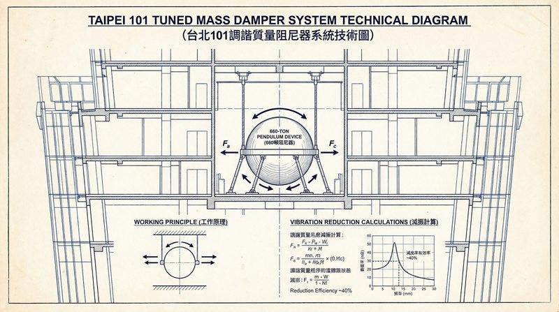
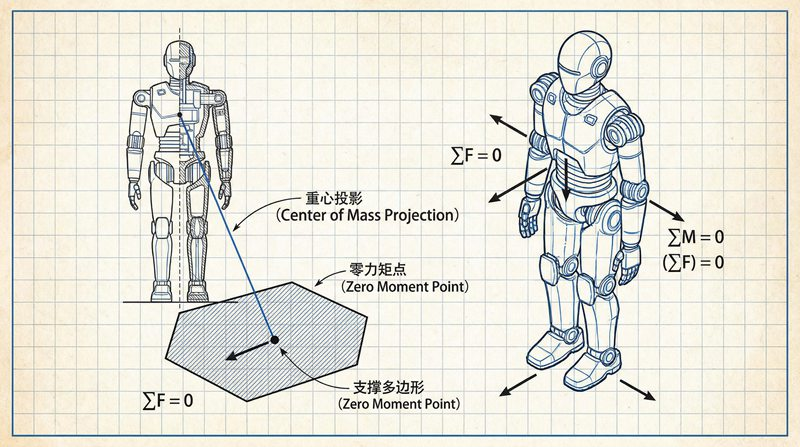
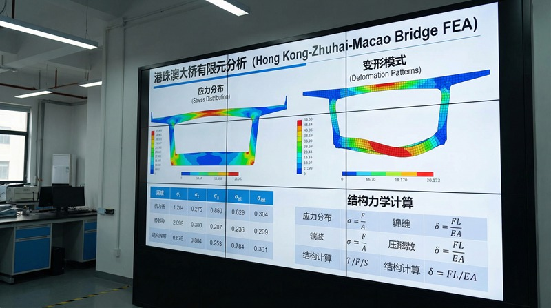

返回课程列表
第六课
振动基础
精密仪器防振与MEMS传感器
⏱️ 约35分钟
光刻机需要纳米级稳定性，地震仪需要检测微弱振动，手机陀螺仪需要感知细微旋转——这些都是振动学的精密应用。

精密仪器的振动控制
高精度设备对振动极其敏感。ASML光刻机的工件台需要在0.1纳米精度下工作，任何微小振动都会导致芯片缺陷。

极致防振技术
精密设备的振动控制：
- 主动隔振：传感器检测振动，执行器产生反向力抵消，衰减99%以上
- 被动隔振：弹簧-阻尼系统隔离地面振动，如气浮平台
- LIGO引力波探测器：隔振系统将地面振动衰减10¹²倍
- 芯片工厂：建在特殊地基上，远离交通和工业振动源
MEMS振动传感器
微机电系统（MEMS）利用微小结构的振动来测量加速度、角速度等物理量。手机中的加速度计和陀螺仪就是MEMS器件。

MEMS传感器的振动原理
微型振动传感器的应用：
- 加速度计：微小质量块在加速时产生位移，电容变化反映加速度
- 陀螺仪：利用科里奥利力检测旋转角速度，精度达0.01°/s
- 地震预警：MEMS加速度计组成的网络可提前数秒预警地震
- 惯性导航：不依赖GPS，通过积分加速度和角速度计算位置